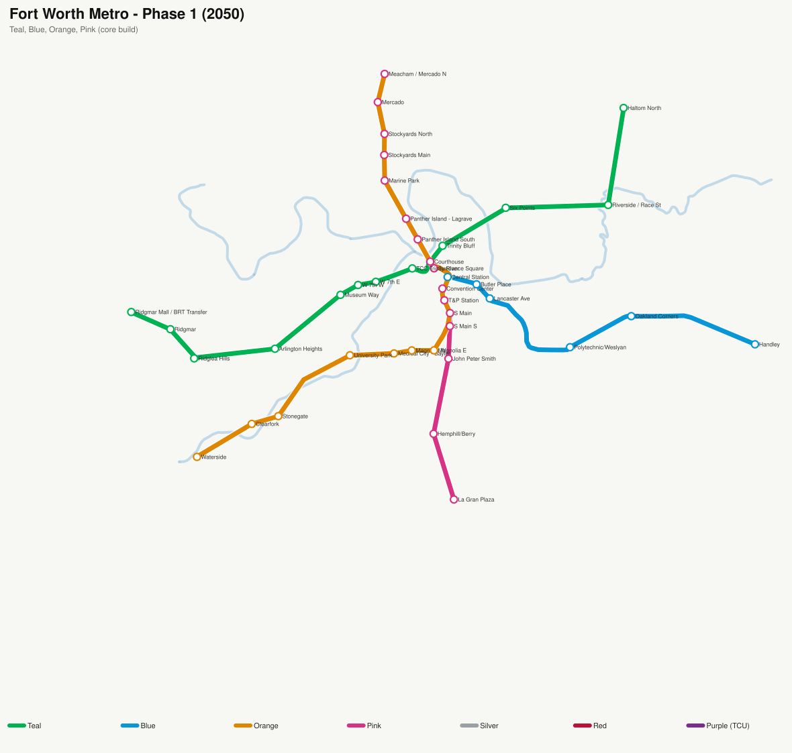

Fort Worth Metro — Hypothetical Growth, 2050 → 2070
To-scale geographic build. Trinity River forks shown in blue. Each step shows the cumulative network; newest lines are drawn bold.

◀ Prev
▶ Play
Next ▶
2050 · Phase 1
2060 · Phase 2
2070 · Phase 3